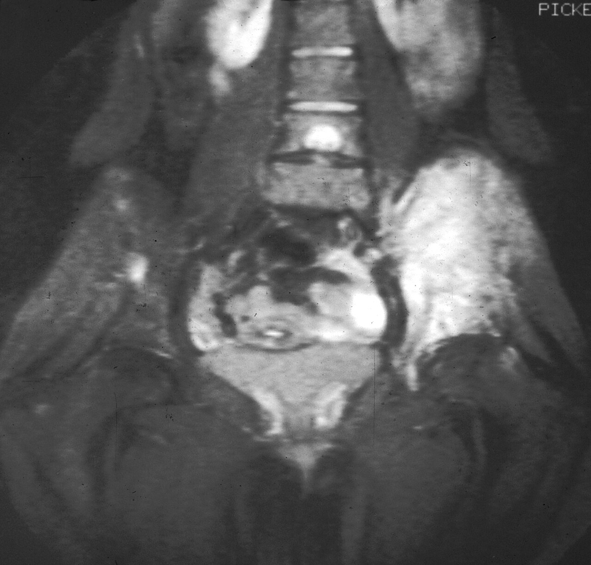

Ficha del catálogo
Sarcoma de Ewing
- Sistema
- Óseo
- Modalidad
- RM
- Región
- Diáfisis y pelvis
- Dificultad
- Avanzado
Tumor maligno de células redondas pequeñas que aparece en la infancia y adolescencia, con predilección por la diáfisis de huesos largos y por los huesos planos de la pelvis. Puede presentarse con fiebre y elevación de reactantes, lo que hace que se confunda con una infección. La masa de partes blandas suele ser desproporcionadamente grande respecto a la destrucción ósea.
Técnica
Resonancia magnética con contraste de todo el hueso afectado, complementada con radiografía inicial y con estudio de extensión torácico y de médula ósea.
Qué observar
- Patrón óseo permeativo o apolillado con múltiples agujeros pequeños
- Reacción perióstica laminada en capas de cebolla
- Masa de partes blandas voluminosa que rodea el hueso
- Escasa o nula matriz calcificada dentro de la lesión
- Afectación diafisaria en huesos largos y de la pelvis en niños mayores
- Extensión medular longitudinal amplia en las secuencias T1
Hallazgos
Lesión ósea permeativa diafisaria con reacción perióstica laminada y masa de partes blandas extensa y realzante.
Perlas
Un tumor con masa de partes blandas grande y destrucción ósea sutil en un niño obliga a pensar en Ewing. La ausencia de matriz calcificada dentro de la masa ayuda a separarlo del osteosarcoma.
Diagnóstico diferencial
- Osteosarcoma
- Metafisario, con matriz osteoide densa y reacción en rayos de sol.
- Osteomielitis
- Secuestro, trayecto fistuloso y respuesta al tratamiento antibiótico.
- Linfoma óseo
- Paciente de mayor edad con lesión permeativa y masa asociada de aspecto similar.
Simuladores
- Osteomielitis subaguda
- Granuloma eosinófilo
- Metástasis de neuroblastoma en el niño pequeño
Por modalidad
- RX
- Muestra el patrón permeativo y la reacción perióstica
- TC
- Útil en huesos planos y para el estudio torácico
- RM
- Define extensión y guía la biopsia y la planificación quirúrgica
Protocolo
Resonancia del hueso completo con secuencias T1, sensibles al líquido y con contraste, más tomografía de tórax y estudio de médula ósea.
Clasificación
Errores frecuentes
- Tratar como osteomielitis por la fiebre y los reactantes elevados
- Subestimar la extensión al no incluir todo el hueso en el estudio
- Biopsiar sin planificación conjunta con el equipo quirúrgico

ewing sarcoma permeativo capas de cebolla diafisis pediatria partes blandas